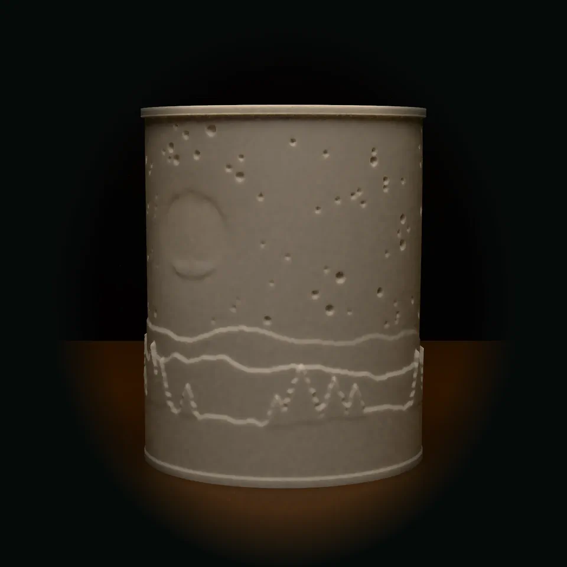

Parts and assemblies
Brackets, enclosures, gears, threads, mechanisms that move and whole assemblies, in millimetres, to print, machine or draw.

Drag to orbit · two fingers or scroll to move · pinch to zoom · double-tap to centre
Open source · script-first
Your agent builds the model and checks its own work: it measures, renders and runs the model's tests. Every dimension is a parameter. The bot sets it, you drag it, the model rebuilds.
One script, a whole assembly
Fan, three compressor stages, combustor, turbine and nozzle: 108 parts in one nested assembly from turbojet.star. Blade counts, radii and clearances are parameters an agent, or you, can change.
One script, a whole assembly
cutaway = True takes a wedge out of every casing, frame and vane ring, so the rotor, the liner and the fuel injectors show. cutaway_angle sets how far it opens.
One script, a whole assembly
explode is a parameter like any other. Every stage slides out along the shaft, and the bolts go with their flanges.
One script, a whole assembly
Fan, compressor, combustor, turbine, nozzle. The model's own tests measure the tip clearance of every blade, so whoever changes it knows at once whether it still fits.
Work with an agent
Cadpole has an MCP server, so a coding agent can build and edit the model, check the result and see what you have selected in the 3D view. It works with your own Claude Code install. Cadpole ships no agent of its own.

Turn Listen on, then type a request in the Messages box.
Real session, sped up. No sound.
Two kinds of work
Cadpole models mechanical parts and it models buildings. An agent drives both through the same operations, so this page shows them one after the other and then what they share.
Brackets, enclosures, gears, threads, mechanisms that move and whole assemblies, in millimetres, to print, machine or draw.

Massing, lots and terrain, floor plans, sun and shadow, sightlines and drawing sets, in feet and inches.
Shared by both: the operations an agent calls, parameters and sweeps, tests, renders, dimensioned drawings, exports and the viewer. The building side is a set of libraries on top; a part never touches it.
Part one
The turbojet at the top is this kind of work. Next: a mechanism that prints in place, artwork turned into relief, an engine taken apart, and a part you can change in the browser.
On GitHub: the guide to parts and assemblies.

Drag to orbit · two fingers or scroll to move · pinch to zoom · double-tap to centre
Mechanisms that move
Eight blades on pivots under a slotted ring. Blade count, aperture and every clearance are parameters of iris.star.
Mechanisms that move
opening runs from 0 to 1. Each drive pin rides a spiral cam slot cut along its own path, so the ring turns 36 degrees from shut to open and the picture is the mechanism.
Mechanisms that move
The blades sit behind the lip. The gaps are whole layers, so it comes off the printer already moving.

Drag to orbit · two fingers or scroll to move · pinch to zoom · double-tap to centre
Artwork turned into relief
lithophane() turns a picture into wall thickness: thin where it is light, thick where it is dark. In room light it is a plain white shade.
Artwork turned into relief
Dim the room and light the lamp inside. Thin wall glows, thick wall stays dark, and a moonrise comes up out of the plastic.
Artwork turned into relief
The picture runs all the way round: a moon over three ranges of hills, pines and stars, drawn by a function in lithophane_lamp.star. It prints upright in one piece.

Drag to orbit · two fingers or scroll to move · pinch to zoom · double-tap to centre
Explode, section, animate
A radial engine with a master rod and six link rods. Turn crank and every piston goes where the geometry puts it.
Explode, section, animate
Rods, pistons, barrels and heads move out along their own cylinders in layers, the propeller and nose case slide forward, and the crankshaft slides back. The keyframes live in the script, next to the parts.
Explode, section, animate
The cutaway removes everything in front of the crank: the propeller, the nose case and the front half of the crankcase, barrels and heads. The master rod, its six link rods, the pistons and the valves show while it turns.
Parts and assemblies · try it here
This is the real engine, compiled to WebAssembly and running in your browser. Move a slider or edit a line and the model is rebuilt from the script.

Rendered ahead of time. Start the engine to change it.
Part two
The same engine at the scale of a house. Scripts write feet and inches, and optional libraries add rooms and storeys, lots and terrain, the sun, sightlines and a solver that places rooms. Every building, lot and rule below is invented.
On GitHub: the guide to buildings and plans.
Buildings and plans · floor plans
An invented two-bedroom cabin, 30 ft by 26 ft. Rooms are rectangles in feet; the walls, door swings, dimension strings, room areas, section and 3D model are all generated from them. The kitchen, the bath and both bedrooms are furnished by the layout solver, which keeps every clearance and the kitchen's work triangle.
One parameter. Move it and the plan is redrawn: the living room, kitchen and deck widen, their areas and the dimension strings follow. Kitchen, bath and bedrooms placed by the layout solver; the living room by hand, held to the same rules by the script's tests.
w = param("living_w", 14, unit="ft", min=12, max=20) x0 = w + P # east rooms start here x1 = x0 + 14 + 8 / 12 xb, n = x0 + 5.5, 13.5 + P TOP = 25.0 # the north wall's inside face ROOMS = [ rm("living", "Living", (0, w, 0, 13.5)), rm("kitchen", "Kitchen", (0, w, n, TOP), furnish = "kitchen_L"), rm("entry", "Entry", (x0, x1, 9.5 + P, 13.5)), rm("bed1", "Bedroom 1", (x0, x1, 0, 9.5), furnish = "full"), rm("bath", "Bath", (x0, xb, n, TOP), furnish = "tub"), rm("bed2", "Bedroom 2", (xb + P, x1, n, TOP), furnish = "full"), ]
Buildings and plans · sites and terrain
An invented 40 ft by 80 ft parcel on a 25 % slope, modelled from the shapes site data comes in: corner coordinates, a surveyed profile and ground samples. The height rule is a body you can see and test against.
The translucent blue volume is the height rule: 30 ft above the ground at every point (its 40 ft cap never bites on this lot). The house steps down the slope in three levels, the walk-out floor a level below the sidewalk on a filled terrace; a test fails when any of it leaves the envelope, and lowering the upper setback paints the part that does in red. The ground is drawn in 5 ft bands, so each edge is a contour.
| Parcel | 40 ft × 80 ft |
|---|---|
| Slope | 25 % |
| Height limit above grade | 30 ft |
| Height cap | 40 ft |
| Upper floor setback | 15 ft |
| Tests in the script | 12 pass |
cadpole test examples/hillside_lot.starBuildings and plans · sun and shadow
sun() places the sun for a latitude, a date and a time. shadow_study() returns the shadow a house throws on a neighbour's light court as an exact area, so a test can hold it at zero.
Three dates by three times of day: the June solstice, the equinox and the December solstice at 9, 12 and 3, looking down the slot between the house and the neighbour's light court. In 3D the court's footprint for the document's own date and hour is drawn in teal, and the line of sight from the sidewalk to the studio's roof lantern turns red where the house cuts it; widen the passage to 12 ft and it clears.
| Lot | 50 ft × 100 ft |
|---|---|
| Proposed house | 30 × 40 × 30 ft |
| Shadow on the court, winter noon | 0 sq ft |
| Lantern from the sidewalk, 8 ft passage | hidden |
| Lantern from the sidewalk, 12 ft passage | seen |
| Tests in the script | 8 pass |
cadpole render examples/shadow_study.star --shadow-study \
--sun 38,-140,2026-06-21,12:00,-9 -o study.pngBuildings and plans · layout optimisation
opt is a linear and mixed-integer solver in the script language. This script gives four rooms minimum sizes and a limit on how long and narrow two of them may be, forbids overlaps, asks the kitchen to share 4 ft of wall with the living room and caps the floor area. The solver picks every size and position.
The answer names the rules that bind and what each costs. Here the floor-area cap, which counts two floors, sets the plate's depth; the outline above the rooms is that second floor. Whole floor plans fitted to a template over three storeys are the same kind of problem and run as background jobs.
| Living room | 24 ft × 17 ft 1½ in |
|---|---|
| Kitchen | 9 ft × 11 ft |
| Bedroom | 10 ft × 11 ft |
| Bath | 5 ft × 11 ft |
| Floor plate | 24 ft × 28 ft 1½ in |
| Floor-area cap, two floors | 1,350 sq ft, 0 left |
| The problem | 45 variables, 58 rules |
| Result | optimal |
p = opt.problem(name="rooms") depth = p.var("plate depth", min=20, max=MAX_DEPTH) p.constrain(FLOORS * WIDTH * depth, max=CAP, name="floor-area cap") apart("living", "kitchen") shares_wall("kitchen", "living", DOOR) sol = p.solve()
cadpole test examples/room_layout_opt.starBuildings and plans · drawing sets
Sheets are part of the script: a cover with a table of the house at three setbacks, a site plan with 1 ft contours, floor plans with their rooms, stair, glazing and door swings dimensioned in feet and inches, a section and an elevation. One export() writes them as one PDF.
The section runs down the slope through both floors and the roof, with the earth hatched and the 30 ft height line. The street elevation has its hidden lines removed and the buried lower level masked by the grade. Every dimension and level is the model's own length, written in feet and inches.
| Sheets | 4 |
|---|---|
| Sheet size | ARCH D, 36 × 24 in |
| Scale of this sheet | 3/16 in = 1 ft |
| Tests in the script | 5 pass |
cadpole export examples/house_set.star --run-exports --out-dir .Shared by both · modelling operations
The operations every model is built from, a bracket and a house alike. Each picture was made by a few lines of script: open one to read them, turn the model round or look over the drawing.
Named numbers with limits drive the model; change one and the part rebuilds.
w = param("width", 40, unit="mm", min=20, max=80) holes = param("holes", 3, min=1, max=6) def plate(w, holes, name): r = min(3, 0.3 * w / holes) # holes shrink to fit a narrow plate s = sketch(XY).rounded_rect(w, 20, 4) for i in range(holes): s = s.circle(r, center=((i + 0.5) * w / holes - w / 2, 0)) return extrude(s, 6, name=name)
A flat sketch, holes included, pushed out into a solid.
outline = sketch(XZ).rounded_rect(20, 20, 1.5) slots = sketch(XZ).polygon(t_slot()).pattern2d_circular(4) outline = outline.subtract(slots).circle(2.1) part = extrude(outline, 60, name="part")
A profile turned about an axis, here three quarters of the way round.
profile = sketch(XZ).polygon( [(4.6, 0), (17.4, 0), (18, 0.6), (18, 3), (17, 4), (9, 4), (9, 15.2), (8.2, 16), (5.8, 16), (4, 14.2), (4, 0.6)]) profile = profile.fillet2d(1.5, corners=[5]) part = revolve(profile, angle=270, name="part")
A section carried along a path of lines and arcs.
route = curve((0, -26, 8)).line((0, -8, 8)) route = route.arc((0, -8 + r, 8 + r), via=(0, -8 + r * s, 8 + r - r * s)) route = route.line((0, 6, 26)) route = route.arc((r, 6, 26 + r), via=(r - r * s, 6, 26 + r * s)) route = route.line((40, 6, 26 + r)) duct = sketch(route.start_plane).rounded_rect(16, 10, 2.5) duct = duct.rounded_rect(12.4, 6.4, 0.7) part = sweep_along(duct, route, name="part")
One solid stretched through several cross-sections.
sections = [
sketch(XY).rounded_rect(30, 30, 14), # round foot
sketch(XY.offset(4)).rounded_rect(24, 24, 11),
sketch(XY.offset(17)).rounded_rect(18, 18, 7.5), # waist
sketch(XY.offset(31)).rounded_rect(27, 27, 8),
sketch(XY.offset(39)).rounded_rect(30, 30, 7), # square mouth
sketch(XY.offset(43)).rounded_rect(30, 30, 7),
]
skin = loft(sections, ruled=False, name="skin")Join two solids, cut one from the other, or keep only the overlap.
joined = union(a1, b1, name="joined") cut = subtract(a2, b2, name="cut") overlap = intersect(a3, b3, name="overlap")
Bolts and nuts from the standard library carry real helical threads.
load("@cadpole/mechanical.star", "bolt", "nut") screw = bolt(12, 1.75, 40, 18, 7.5, name="screw") # M12 x 1.75 ring = nut(12, 1.75, 18, 10, start=(0, 0, 12), name="ring")
Pick edges by the face they belong to and cut them back to a flat.
top = block.faces(normal=(0, 0, 1)).one() part = chamfer(block, 2, edges=top.edges, name="part")
Round the edges you select, each set with its own radius.
corners = block.edges(direction=(0, 0, 1), below=XY.offset(6.01), min_dihedral=45) part = fillet(block, 6, edges=corners, name="part") top = part.faces(normal=(0, 0, 1)).max("z") part = fillet(part, 5, edges=top.edges, name="soft")
Model one half and reflect it across a plane.
both = mirror(half, plane=YZ, merge=False) twin = both[1]
Copies of a body stepped along a direction.
fin = translate(extrude(blade, 38), (-28, 19, 0), name="fin") fins = pattern_linear(fin, 9, (7, 0, 0), name="fins") sink = union(base, fins, name="sink")
Copies spaced around an axis, used here to cut a ring of holes.
holes = pattern_circular(hole, 8, axis=(0, 0, 1)) part = subtract(flange, holes, name="part")
Describe a profile by its relationships and sizes; the solver finds the shape.
s.constrain("horizontal", foot) s.constrain("vertical", back) s.constrain("perpendicular", foot, toe_face) s.constrain("equal", toe_face, cap) s.constrain("distance", heel, toe, 50, name="length") s.constrain("distance", toe, toe_top, 6, name="thick")
Grow or shrink an outline by a set distance to make walls and rims.
wall = shape.offset(3).subtract(shape) # grow rim = extrude(wall, 10, name="rim") inset = sketch(XY.offset(1.8)).polygon(L) groove = inset.offset(-2).subtract(inset.offset(-3.4)) # shrink
Lettering becomes ordinary geometry you can raise, cut or engrave.
label = text("CADPOLE", size=9, weight=700, align="center", baseline="middle", plane=XY.offset(4), at=(0, 2.5)) letters = extrude(label, 1.2, name="letters") line = text("PARAMETRIC CAD", size=3.4, weight=700, align="center", baseline="middle", plane=XY.offset(3.4), at=(0, -6.5)) plate = subtract(plate, extrude(line, 1, name="cut"), name="tag")
Artwork wrapped around a curved face and raised from it.
art = text("42", size=14, weight=800, align="center", baseline="middle") part = emboss(cup, side, art, 1.2, wrap=wrap.unroll, origin=(0, -r, 16), up=(0, 0, 1), name="part")
Shapes described as distance fields merge with a soft radius.
f = field.cylinder(18, 6, round=2).translate((0, 0, 3)) stem = field.cylinder(4.5, 26, round=1).translate((0, 0, 19)) ball = field.sphere(9).translate((0, 0, 36)) f = f.smooth_union(stem, 4).smooth_union(ball, 3) part = mesh(f, resolution=0.3, simplify=False, name="part")
A field turned steadily about its axis, then turned into a mesh.
f = blades.smooth_union(foot, 2).smooth_union(cap, 2) f = f.twist(5.0) # degrees per mm, about Z part = mesh(f, resolution=0.35, simplify=False, name="part")
Cut a part on a plane to see inside it.
cut = plane(origin=(0, 0, 0), normal=(0, -1, 0)) part = split(body, cut, keep="below", name="part")
Dimensioned three-view sheets, written out as PDF and DXF.
sheet = drawing(part, view="three-view", sheet="A4", units="in", title="Flanged boss") export_pdf(sheet, "flanged_boss.pdf") export_dxf(sheet, "flanged_boss.dxf")
A line drawing from any camera angle, with the edges behind the part dashed.
view = page.axon_view(block, az=-35, el=28, hidden="dashed")
Front, top and right views on one sheet, dimensioned in inches, as SVG, PDF and DXF.
set = sheet_set("Pillow block PB-075", size=sheet.letter, units="in", title_block=title_block(project="PILLOW BLOCK PB-075")) page = set.sheet("D1", "PILLOW BLOCK", scale=1) front = page.elevation_view(block, direction="front", at=(84, 58), hidden="dashed") front.dimension((-2 * inch, 0), (2 * inch, 0), offset=-20) export(set, "pillow_block.pdf") export(set, "pillow_block.dxf")
Cut the part on a plane; the cut face is hatched and dimensions run between model points.
cut = page.section_view(block, plane="y=0", at=((x0 + x1) / 2 + 8, y0 + 42)) cut.dimension((-2 * inch, 0), (2 * inch, 0), offset=-16)
Shared by both · vector drawings
The model that renders also draws: hidden-line views, dimensioned sheets and hatched sections, written as SVG, PDF and DXF. A line is stored as its ends, so it stays sharp at any size.
A path-traced picture of a knurled thumbscrew and its nut, and the line drawing of the same model from the same parallel camera: edges in sight solid, edges behind dashed, the thread inside the nut among them. Drag the handle between the two. Zoomed in this far the picture has run out of pixels; the lines are drawn again at every size.
cadpole op Drawing --doc pair-thumbscrew.star --view sheet:V1 \
--format svg --tolerance 0.02Shared by both · what comes out
The script is the source. Everything else is generated from it, so it never goes stale.
One export() line per file. This set writes an STL per bin and a Bambu Studio 3MF: a plate per filament, every bin a named object.
Views, sections and dimensions drawn from the model as vectors, ready to print or send to a laser.
Read a mesh, a STEP part or a DXF profile, then keep working on it with the same operations: a sculpted owl fused to a drilled base, an exact pillow block filleted and fitted, an involute gear hubbed and keyed.
Every image on this page came from cadpole render and cadpole animate. sweep draws a sheet of variants.
Gallery
Every script is in the repository. Open one and turn it round; where there is a print file, it was plated for the printer by cadpole plate.
The logo stood up: its SVG imported as a prism, the front edge rounded by a signed-distance blend, the colours inlaid as parts that touch, on a plinth with raised lettering.
One script for the baseplate and every bin: sizes, dividers, scoops, label tabs and a stacking lip, plus a 3MF with a plate per filament.
A printable snap-fit case around a model of the board, made from its published drawing. One table places each port and cuts its opening.
Sun, planets and a chevron-fluted ring that print as one piece, already assembled, and turn 4:1 when they come off the bed.
Blades lofted between two curves in space, with a splitter in every passage.
Real ISO metric threads swept along a helix, and a straight knurl that runs out into turned chamfers. The nut threads on with real running clearance.
An invented two-bedroom cabin, furnished. Rooms are rectangles in feet; walls, doors, furniture and deck follow, cut at 4 ft like a plan.
Shared by both · how it is driven
A model is a short script in Starlark, a small deterministic Python dialect: the same script gives the same model every time, wherever it runs. An agent writes it; you can too.
w = param("width", 60, unit="mm", min=50, max=120) depth, thick = 30, 6 pitch = w - 16 # screw centres, 8 mm in from each end cb_r, cb_depth = 4, 3.0 # counterbore for a low socket head M4 plate = extrude(sketch(XY).rounded_rect(w, depth, 5), thick, name="plate") plate = fillet(plate, 0.8, edges=plate.faces(normal=(0, 0, 1)).one().edges, name="edge") # The counterbores are cut first, so each 4.5 mm screw hole then only # pierces a floor. The centre bore is one cutter: a 12 mm cylinder through a # 45-degree countersink cone, standing proud of the cone's top. ends = [-pitch / 2, pitch / 2] counterbored = subtract([plate] + [cylinder(cb_r, cb_depth + 2, at=(x, 0, thick - cb_depth)) for x in ends]) bore = union(cylinder(6, thick + 4, at=(0, 0, -1)), cone(4.5, 8.5, 4, at=(0, 0, thick - 3))) part = subtract([counterbored, bore] + [cylinder(2.25, thick + 2, at=(x, 0, -1)) for x in ends], name="part") part.material(color="#6fbfa8", roughness=0.35, metallic=0.3) part.tessellation(tolerance=0.01) # small round holes stay round up close export(part, "part.stl")
An MCP server gives an agent every operation as a typed tool: evaluate a script, read the diagnostics, look at the render, read the measurements, run the tests, then try again.
render, sweep, animate, export, test and serve in one binary. It runs the same on Linux and on a Mac.
cadpole serve opens an editor and a 3D view in the browser. It is the same engine as the command line, compiled to WebAssembly.
A script can measure itself: clearances, volumes, wall thickness. Every example in the repository runs under test.
Work with an agent · set it up
Let your agent do it: paste this, and it goes through the steps below with you.
Set up Cadpole's assistant integration from github.com/mikelikespie/cadpole (docs/assistant-integration.md): register its MCP server with claude mcp add, start cadpole serve on my script, and tell me when to restart you so you can wait for my messages.Or step by step:
Have Claude Code installed. Cadpole uses your own install and ships no agent of its own.
claude --versionOpen your script in the web app.
cadpole serve bracket.starRegister Cadpole's MCP server, in your project folder.
This adds it for you in this folder (the local scope); --scope project writes it to .mcp.json for everyone on the project. claude mcp list checks the connection and claude mcp remove cadpole takes it out.
claude mcp add cadpole -- cadpole mcp{
"mcpServers": {
"cadpole": {
"command": "cadpole",
"args": [
"mcp"
]
}
}
}Start Claude Code in that folder and ask it to wait for Cadpole. It runs cadpole listen in the background, which costs nothing until you send a message.
claudeThen ask it:
Wait for messages from Cadpole in the background and act on them.Turn Listen on in the web app and type in the Messages box.
Any MCP client can connect the same way; only Claude Code has been tested. The feature is documented as assistant integration.
Cadpole is an independent project, not affiliated with or endorsed by the maker of Claude Code.
Get started
Cadpole builds on Linux (x86-64 or arm64) and macOS (Apple silicon), from source.
Paste this into the agent you already use. The getting-started guide is written to be followed end to end: exact commands, what each system needs, and a check after every step.
Set up Cadpole from github.com/mikelikespie/cadpole: follow its getting-started guide (docs/getting-started.md), build the CLI, and render examples/bracket.star.bazelFollow the official Bazelisk installation instructions for your system. It fetches the Bazel version the repository pins, and Bazel fetches the Rust, C++ and Node toolchains: you never run cargo or npm. Linux (x86-64 or arm64) also needs g++; macOS (Apple silicon) needs Xcode 27. The next step checks all of this and prints the command for anything missing.
git clone https://github.com/mikelikespie/cadpole.git && cd cadpoleChecks your machine, builds, and puts cadpole on your PATH. The first build compiles everything and takes a while (about 12 minutes on 8 cores, 25 GB of disk); later ones take seconds. Without installing, ./bin/cadpole … works from the checkout.
Render a picture: bracket.png shows a mounting bracket.
cadpole render examples/bracket.star -o bracket.pngDraw a sheet of variants.
cadpole sweep examples/planter.star --param top_radius=40,55,70 --param wall=1.6,3 -o sheet.pngAnimate a mechanism. This one takes a few minutes.
cadpole animate examples/gear_toy.star -o gear_toy.gifOpen the web editor. It prints an open: address; open that in a browser.
cadpole serve examples/bracket.starTo have your coding agent change the model while you watch, register Cadpole's MCP server: the steps are under Connect your coding agent.
Apache-2.0. Source, getting started, the guides to parts and assemblies and to buildings and plans, and the scripting reference they share are on GitHub. Windows is not supported.